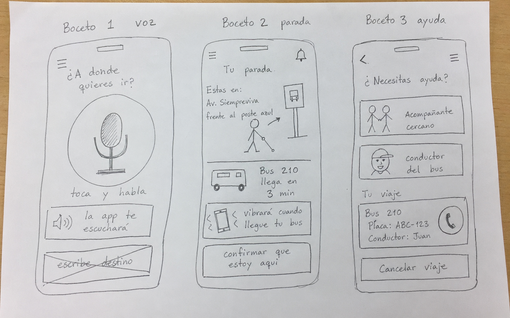
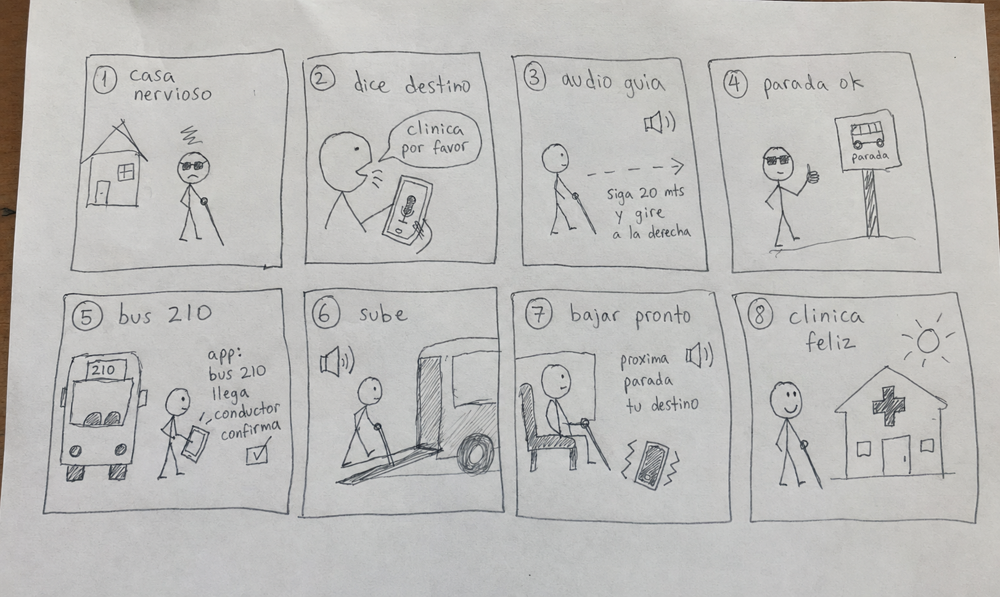

Usuario en casa quiere llegar a una clinica. Se siente nervioso.
Tipo de presentacion elegido: sitio web interactivo
Interfaz para transporte de personas con discapacidad visual
Propuesta de app movil que combina guia por voz, vibracion, alto contraste y confirmacion del transporte para reducir incertidumbre durante el viaje.
12:40
Ruta activa
Bus 210 llega en 4 min
Parada: Clinica Zona 10Parte 1 · Sketching
Tres bocetos rapidos
Los tres bocetos exploran soluciones distintas: una ruta guiada por voz, una pantalla centrada en parada segura y una experiencia con acompanamiento.
- Boceto 1: boton grande de voz y pasos de ruta.
- Boceto 2: informacion de parada, bus y alertas tactiles.
- Boceto 3: confirmacion de conductor o acompanante.
Comentario de companero
Me indicaron que el boton de voz debia ser mas dominante, que la app no debia depender solo de texto y que la confirmacion del bus tenia que ser mas clara antes de subir.


Parte 2 · Storyboarding
Situacion de uso
La app escucha el destino por voz. Se siente mas tranquilo.
La app guia hacia la parada con audio y vibracion. Va concentrado.
Llega a la parada correcta. Se siente aliviado.
La app confirma bus y conductor. Se siente confiado.
Sube al transporte con ayuda de audio. Se siente seguro.
Recibe aviso antes de bajar. Se mantiene atento.
Llega a la clinica y guarda la ruta. Se siente satisfecho.
Retroalimentacion de grupo
El grupo sugirio agregar una opcion de repetir instrucciones y una confirmacion fuerte cuando el bus correcto esta enfrente.
Parte 3 · Prototipo
Prototipo en linea
Flujo probado con roles de usuario y evaluador: pedir ruta, caminar a parada, confirmar transporte y bajar en destino.
Reflexion final
Respuestas breves
Que cambio entre primer boceto y prototipo final?
El primer boceto era mas visual. El prototipo final se centro mas en voz, vibracion y confirmaciones.
Necesidad mas dificil de resolver
Confirmar que el transporte correcto llego sin depender de ver el numero del bus.
Supuestos sobre el usuario
Supuse que usa lector de pantalla y audifonos. Si no fuera cierto, la app tendria que depender mas de vibracion y ayuda externa.
Elemento que funciona mejor
El boton de voz grande, porque permite pedir y repetir instrucciones sin buscar opciones pequenas.
Una mejora antes de lanzar
Agregaria confirmacion con el conductor para que la app diga nombre, placa y punto exacto de abordaje.
Momento con feedback mas util
La prueba del prototipo, porque mostro problemas reales al avanzar entre pantallas.